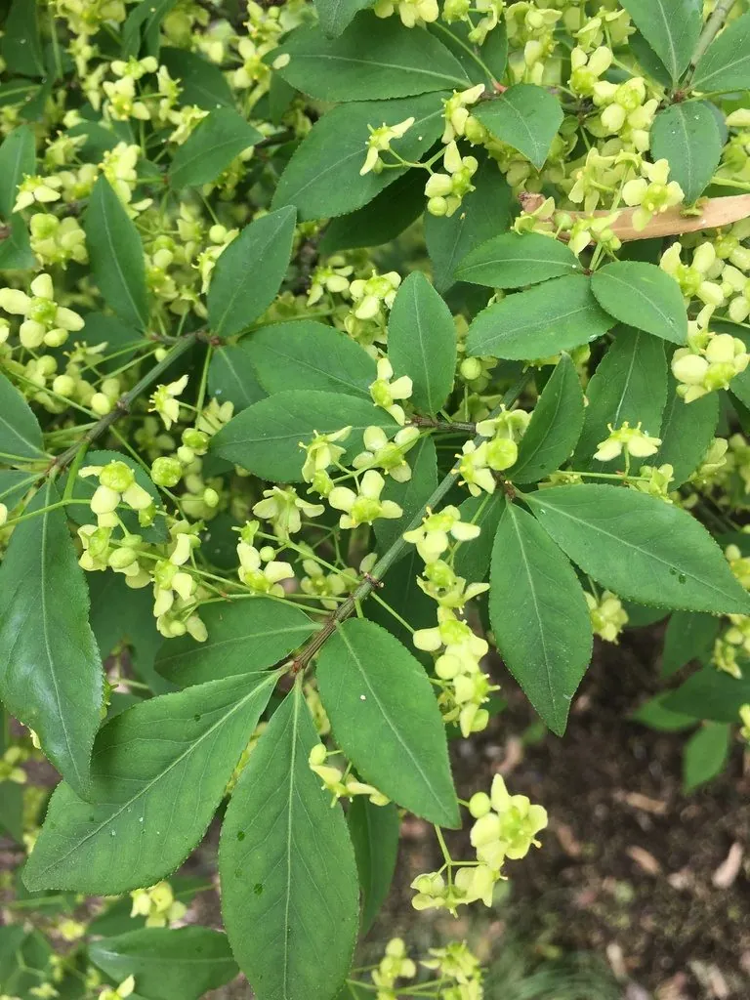

灌木与花木 · 植物界
金边黄杨 Euonymus japonicus 'Aureo-marginatus'

卫矛科卫矛属常绿灌木，叶片边缘镶金黄色边、四季不凋，耐修剪抗污染，是南方色块绿篱的常用材料。
- 分类
- 门被子植物门纲木兰纲目卫矛目科卫矛科属卫矛属
- 栖息环境
- 园林绿地与庭院，喜光耐半阴、耐修剪抗污染
- 地理分布
- 原种产日本；中国长江流域及以南地区广泛栽培
- 保护级别
- 栽培品种，无野生种群；不涉及保护等级
物种志
金边黄杨为卫矛科卫矛属常绿灌木，高一至三米，分枝密集，小枝绿色、具四棱。叶片对生，革质，倒卵形至椭圆形，叶缘具浅黄色至金黄色的宽边，中央深绿色，表面有光泽。花小，绿白色，组成腋生的聚伞花序，花期五至六月；蒴果球形，成熟时淡红色并开裂，露出橙红色假种皮，果期九至十月。
金边黄杨是大叶黄杨的金边栽培品种，原种产于日本，中国长江流域及以南地区广泛栽培。它喜光也耐半阴，耐修剪、耐寒、抗污染，适宜疏松肥沃、排水良好的土壤。叶色金绿相间、四季常青，是制作色块、绿篱和造型球的优良材料，也可盆栽观赏；园林中常与红花檵木、红叶石楠搭配，形成鲜明的色彩对比。扦插繁殖容易，栽培管理粗放。
形态与习性
- 株高1–3 m，分枝密集
- 花期5–6 月，花小、绿白色
- 果期9–10 月，蒴果淡红色
- 光照喜光，也耐半阴
- 水分喜湿润，忌积水
- 土壤疏松肥沃的壤土
- 主要用途色块绿篱、造型球与盆栽
趣味知识
- 金边黄杨的叶缘金黄色带宽窄不一，阳光下整株呈现金绿相间的效果。
- 它的果实成熟后会裂开，露出橙红色的假种皮，十分醒目。
- 金边黄杨抗二氧化硫等有害气体，是工矿区和道路绿化的常用灌木。